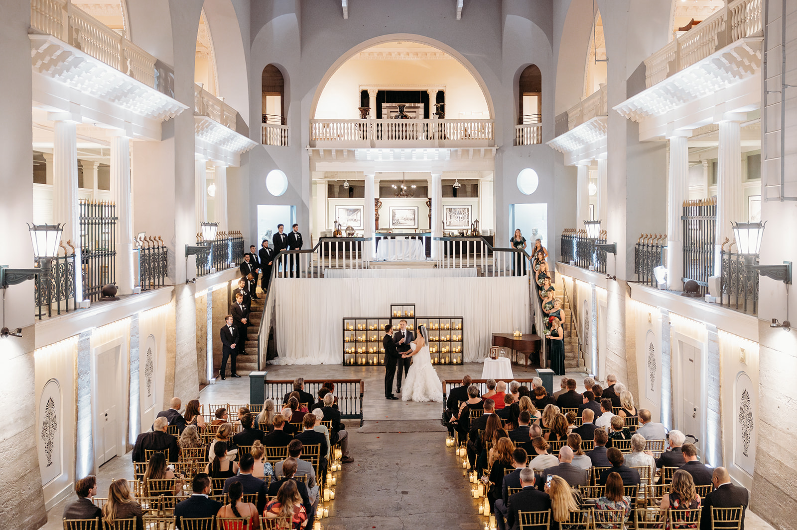
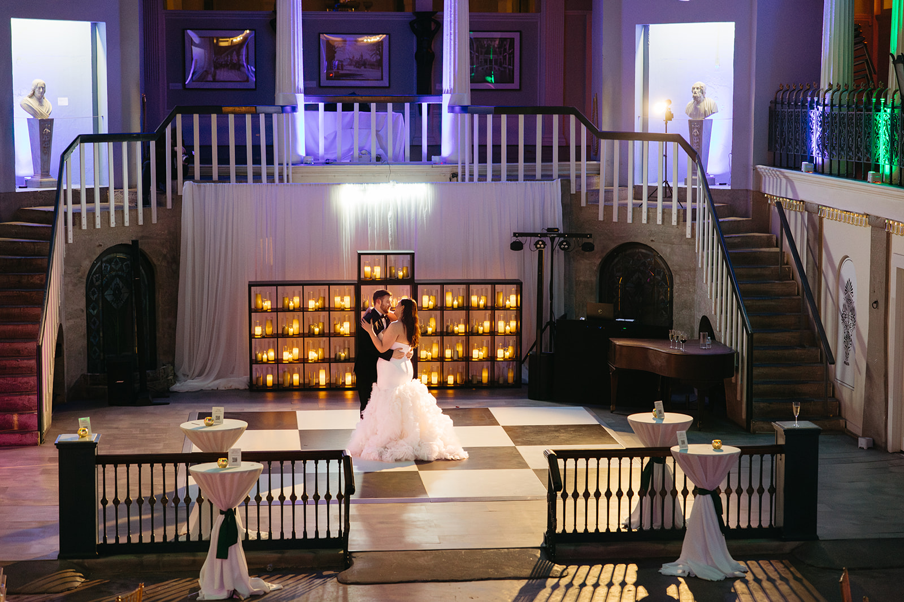
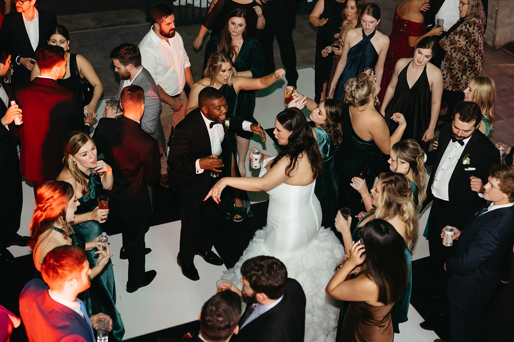
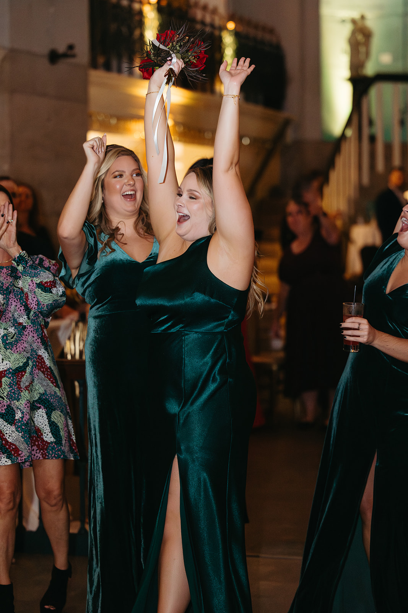

A Gilded Age swimming pool turned grand event hall, ornate Moorish arches, and one of the most historically striking settings in all of St. Augustine — here's what to know before booking your wedding at the Lightner Museum.
The Lightner Museum occupies the former Hotel Alcazar, one of two luxury resort hotels built by Henry Flagler in St. Augustine in the late 1880s. The Moorish Revival building was designed by the same architects as the Flagler College (formerly Hotel Ponce de León) directly across King Street, and the two buildings together define the architectural character of downtown St. Augustine. The museum is owned by the City of St. Augustine and houses a collection of Gilded Age art and antiques — but its most dramatic space is the Alcazar Court, which was originally built as the world's largest indoor swimming pool.
That pool was drained decades ago and now serves as the museum's main event floor — a soaring, multi-story open space with balconies overlooking the main floor, ornate ironwork, and the kind of architectural detail that simply doesn't exist in modern venues. Couples who choose the Lightner Museum are typically looking for something that doesn't look like any other wedding they've attended.

The Lightner Museum's event spaces reflect the building's layered history as a Flagler hotel and a city museum:
| Space | Capacity |
|---|---|
| Alcazar Court (former indoor pool) | Up to ~200 seated guests |
| Café Alcazar (lower level) | Intimate gatherings, cocktail receptions |
| Balcony areas | Cocktail hour, photography, overflow |
The Alcazar Court is the primary event space — tall enough to feel like a cathedral, ornate enough to serve as its own decor, and large enough for a full reception. Café Alcazar on the lower level operates as a working café during museum hours and can be incorporated into private events after hours.

Lightner Museum weddings typically begin with a ceremony in the Alcazar Court itself, using the room's dramatic height and architectural backdrop as the ceremony setting. Guests are seated on the main floor, the couple enters from one end of the court, and the balconies above create a natural gallery effect. After the ceremony, a brief transition turns the same space into a reception — cocktail hour can happen on the balconies or in Café Alcazar while the floor is reset.
From an entertainment standpoint, the Alcazar Court's size and stone construction create natural reverb. The room responds to sound differently than a standard ballroom — which is not a problem, but it does require deliberate speaker placement. An experienced DJ will position speakers to distribute sound evenly across the room rather than letting the high ceilings reflect sound unpredictably. We walk through this with venue staff before your wedding day.

The Lightner Museum is one of the most architecturally distinctive wedding venues in the St. Augustine area, and entertainment planning here centers on working with the room rather than against it. The Alcazar Court's high ceilings and stone walls are stunning, but they do carry sound — so speaker positioning and volume management matter more here than in a standard hotel ballroom.
Load-in at the Lightner requires coordination with museum and city event staff, as the venue has specific requirements around equipment placement and access. We confirm all of this in advance of your wedding day so the setup is smooth and nothing is figured out on the fly.
What we confirm before every Lightner Museum wedding: load-in access and timing, speaker placement for the Alcazar Court's acoustics, ceremony-to-reception transition plan, and any venue-specific restrictions on equipment or sound levels.
A mirror booth or 360 video booth works beautifully at the Lightner — the architecture gives guests an instant backdrop without any additional setup. Placement is planned around traffic flow and the room's layout so the booth gets used throughout the night, not just early in the evening.
Looking for a St. Augustine wedding DJ who knows historic venues? Footloose Entertainment's DJ & MC packages start at $1,495, with final pricing shaped by guest count, hours of coverage, and any add-ons. See what's included or request a quote for your date.

The Alcazar Court accommodates up to approximately 200 guests for a seated reception. Smaller spaces on the property work well for intimate ceremonies and cocktail gatherings of 50–100 guests.
Yes. The Alcazar Court serves as both a ceremony and reception venue — the room is large enough to hold a ceremony on the main floor and then transition into a full reception setup.
The Alcazar Court is a large, high-ceilinged historic space, which means sound carries and reverberates more than in a standard ballroom. An experienced DJ who knows the room will account for this in speaker placement so the room sounds great without becoming overwhelming.
Load-in at the Lightner Museum requires coordination with the venue's event staff given the museum setting. The Alcazar Court's height and stone construction create natural reverb, so speaker placement is more deliberate than at a standard ballroom. We walk through logistics with the venue well in advance of your wedding day.
Yes — the Alcazar Court's scale and the surrounding historic architecture make it a beautiful backdrop for a mirror booth or 360 video booth. Placement is planned in advance to work with the room's layout and the museum's event requirements.
The Lightner Museum hosts weddings, rehearsal dinners, corporate receptions, and private events. The venue is operated through the City of St. Augustine and requires separate coordination for each event type.